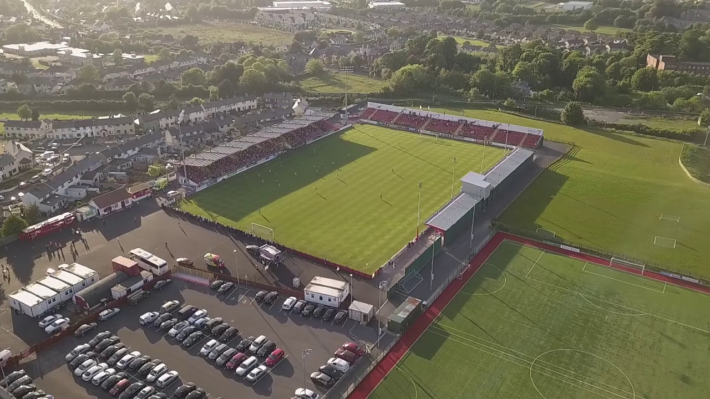
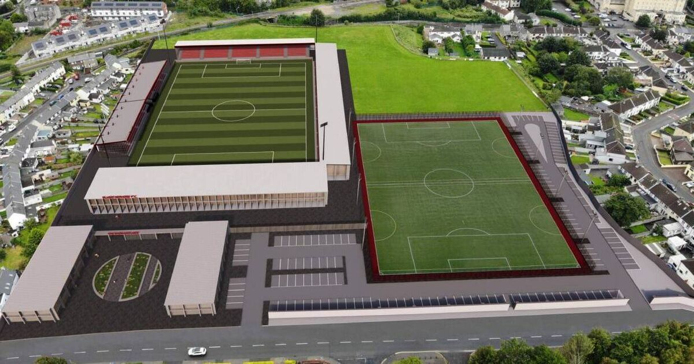

The Showgrounds was leased until 1968 when it was then purchased for Sligo Rovers by a trust foundation representing the people of Sligo. Under the terms of the purchase it can never be mortgaged, sold or used for any commercial purposes other than sport and leisure. The Showgrounds is a 12 acre (49,000 m²) site with the stadium capacity of 3,873 seats. On 8 November 1978 Sligo opened their new covered accommodation on the Jinks Avenue in a FAI League Cup semi final against Shamrock Rovers. In November 2001 the new main stand was opened to the public for the League Cup fixture with St. Patrick's Athletic. The stand accommodates 1,853 seats, although there is available capacity for further seating. It has been built in cantilever style to ensure there is no obstructed view. The Showgrounds was revamped in winter 2006 with the demolition of the ground's most famous "Shed". This was followed by the demolition of the ground's old famous turnstiles. New state of the art turnstiles were built along with front offices. In March 2009 work was finished on a new club shop which is open on match nights. This is situated on the Tracey Avenue Stand side. In May 2009 the Showgrounds had some major upgrading work done to enable the club to compete in the 2009-10 UEFA Europa League. This work included the building of a new fully tarred car park, along with upgrading work to both all seater stands. An extra 200 seats were added to the Red Stand and also new seating was put into the jinks side of the ground. This work brought the seating capacity of the ground up to 2,700 which was required for competing in the Europa League. In July 2012 a new stand, now known as the Pet Stop Stand, was completed at the Railway End consisting of 1,323 seats. In the 2016 domestic league season, the Sligo Rovers drew an average home attendance of 2,087, the fourth-highest in the league. Read more about The Showgrounds here...
New Stadium

The redeveloped Showgrounds would have a seated capacity of 6,000, surpassing all the requirements of a UEFA Category 3 stadium. It includes the retention of the existing Tracey Avenue Stand and Railway End Stand, with alterations to both, the construction of a new stand at the Church Hill Road End and a new stand in place of the current Jinks Avenue Stand. New floodlights, turnstiles, hospitality spaces, shops, corporate and sponsors facilities, offices, meeting rooms, upgraded media facilities, multiple changing rooms and a gym would be part of the redevelopment. The Showgrounds pitch would be extended and the playing surface changed to a hybrid pitch, an innovation that comprises 95% natural grass and delivers more playing time. The total cost of the overall project as complied by Rhatigan Architects is €17.3million. Through this development, and the growth of commercial areas of the football club, Sligo Rovers aim to greatly enhance the opportunities for future generations of young male and female footballers and increase employment in the football industry in Ireland. The club was granted €16,400,000 under Government’s Large Scale Sport Infrastructure Fund (LSSIF) for the redevelopment of the Sligo Showgrounds in November of 2025. This level of Government funding is unprecedented for a sporting project in the north-west. It represents one of the most significant grant awards to a League of Ireland Club and will see the delivery of a new regional multi-sport stadium, the first UEFA Category 3 Stadium outside Dublin.Read more about the development plans here...